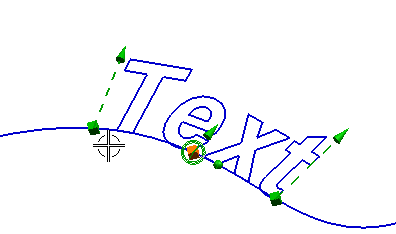

预计完成这堂课需要：3–7 分钟
文本命令可从 True Type 文本轮廓生成曲线，并用于拉伸、投影、腔体以及其它特征。
文本具有以下特性：
单一直线输入线串
支持 True Type 字体
支持各种字体样式(正常/粗体/斜体/粗斜体)
使用数字输入或交互式手柄定制大小
定制拉长和修剪操作
定制字距(更改字符间距)
使用手柄、捕捉点、基准平面或者平面定义字符放置平面
文本几何体沿着曲线和曲面分布，您也可以创建一个全相关的文本特征。

任何时候都可以使用文本命令，只要您需要文本作为设计元素插入到您的部件模型中。
可以创建三种类型的文本：
曲线上
平面副
面上
文本命令在建模、草图、制图、, 加工以及外观造型设计中可用。